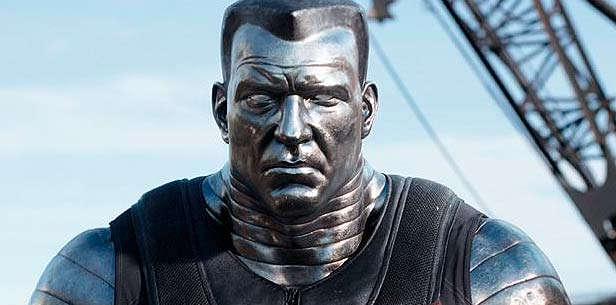

Wade Wilson es un joven mercenario que tras someterse a unos experimentos sufre
unas mutaciones que afectan a su cuerpo y apariencia y por las que busca venganza
También a trabajado en videojuegos como parte del equipo de efectos visuales
Deadpool es el protagonista de la película. Su verdadero nombre es Wade Wilson y
se transformo en Deadpool tras someterse a un tratamiento que le provocó mutaciones
Vanessa es una joven scort que se enamora de Wade en un bar
Ajax es el culpable de las mutaciones de Deadpool y es el foco de la vengaza del mismo
Coloso es un miembro de los X-Men que posee una mutacion que convierte su cuerpo ha acero
Taxista que se hace amigo de Wade
| Link | Precio | |
|---|---|---|
| Disney+ | Suscripción a Disney+ | |
| Prime Video | 3'99€ Alquilada /9,99€ Comprada | |